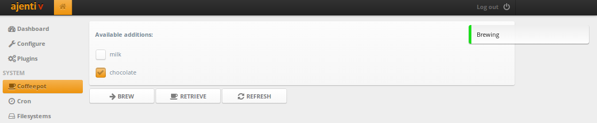
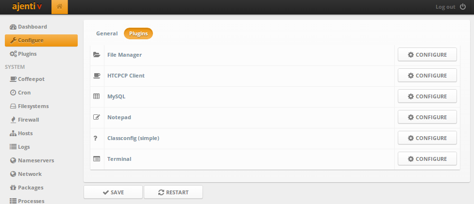
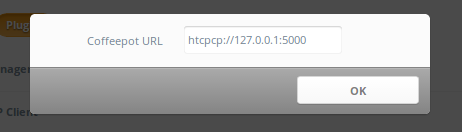
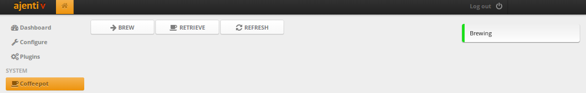

Веб-интерфейс для кофеварки на Ajenti через HTCPCP
Надоело бегать за кофе и жать кнопки на кофеварке? Сделай к ней веб-интерфейс!

Весь код из статьи доступен на Github.
Подготовка
Скачаем Ajenti c PyPI и распакуем.
Устанавливаем зависимости:
sudo pip install -Ur requirements.txt
Кроме того, понадобится поддерживающая HTCPCP кофеварка, а если ее у вас нет — можно воспользоваться простым эмулятором, который поддерживает добавление молока и шоколада!
HTCPCP-клиент
Создадим в ajenti/plugins папку htcpcp, а в ней — структуру файлов для плагина:
ajenti/plugins/htcpcp
├── __init__.py
├── client.py
└── layout
└── config.xml
В __init__.py помещается информация о плагине:
from ajenti.api import *
from ajenti.plugins import *
info = PluginInfo(
title='HTCPCP Example',
icon='coffee',
dependencies=[
PluginDependency('main')
],
)
def init():
import client
import main
В client.py создадим класс для работы с протоколом HTCPCP:
import requests
from ajenti.api import *
from ajenti.plugins.configurator.api import ClassConfigEditor
@plugin
class HTCPCPClientConfigEditor (ClassConfigEditor):
"""
A plugin that handles editing of HTCPCPClient's classconfig
"""
title = 'HTCPCP Client'
icon = 'coffee'
def init(self):
self.append(self.ui.inflate('htcpcp:config')) # htcpcp/layout/config.xml
class CoffeeAddition (object):
def __init__(self, name):
self.name = name
self.selected = False
@plugin
class HTCPCPClient (BasePlugin):
classconfig_editor = HTCPCPClientConfigEditor # connect this plugin with a ConfigEditor
default_classconfig = {'url': 'htcpcp://127.0.0.1:5000'}
def init(self):
self.additions = []
def check_connectivity(self):
resp = requests.request('PROPFIND', self.get_url())
if resp.status_code == 418:
raise Exception('This coffee pot is a teapot')
def refresh(self):
resp = requests.request('PROPFIND', self.get_url())
self.additions = [CoffeeAddition(x) for x in resp.headers['Additions-List'].split(';')]
def get_url(self):
return self.classconfig['url'].replace('htcpcp', 'http')
def brew(self):
"""
Brew coffee with selected additions
"""
return requests.request('BREW', self.get_url(), headers={
'Accept-Additions': ';'.join(x.name for x in self.additions if x.selected)
})
def retrieve(self):
return requests.request('GET', self.get_url())
Обратите внимание, что здесь мы используем ConfigEditor API, чтобы дать пользователю возможность перенастроить класс HTCPCPClient на использование другого URL кофеварки.
Создадим пустой раздел в панели (main.py):
from ajenti.api import *
from ajenti.plugins.main.api import SectionPlugin
from client import HTCPCPClient
@plugin
class CoffeePlugin (SectionPlugin):
"""
A HTCPCP capable coffeepot control plugin
"""
def init(self):
self.title = 'Coffeepot'
self.icon = 'coffee'
self.category = _('System')
# IoC: получаем объект HTCPCPClient
self.pot = HTCPCPClient.get()
Добавим немного UI для настройки класса и запустим панель:
<bind:dict id="bind"> <!-- Плагин настроек свяжет этот элемент с атрибутом .classconfig класса -->
<formline text="Coffeepot URL">
<textbox bind="url" />
</formline>
</bind:dict>
make run
Теперь, перейдя в раздел Configure > Plugins, мы видим наш плагин и можем настроить URL.


Интерфейс
Давайте создадим несколько красивых кнопочек!
htcpcp/layout/main.xml:
<hc>
<button id="brew" icon="arrow-right" text="Brew" />
<button id="retrieve" icon="coffee" text="Retrieve" />
<button id="refresh" icon="refresh" text="Refresh" />
</hc>
htcpcp/main.py:
from ajenti.api import *
from ajenti.plugins.main.api import SectionPlugin
from ajenti.ui import on
from ajenti.ui.binder import Binder
from client import HTCPCPClient
@plugin
class CoffeePlugin (SectionPlugin):
"""
A HTCPCP capable coffeepot control plugin
"""
def init(self):
self.title = 'Coffeepot'
self.icon = 'coffee'
self.category = _('System')
self.append(self.ui.inflate('htcpcp:main')) # htcpcp/layout/main.xml
self.pot = HTCPCPClient.get()
def on_page_load(self):
try:
self.pot.check_connectivity()
except Exception, e:
self.context.notify('error', 'Could not access the coffee pot: %s!' % str(e))
self.context.launch('configure-plugin', plugin=self.pot) # попросим плагин Configure показать окно настроек
@on('brew', 'click')
def on_brew(self):
resp = self.pot.brew()
if resp.status_code == 200:
self.context.notify('info', 'Brewing')
else:
self.context.notify('error', resp.text)
@on('refresh', 'click')
def on_refresh(self):
# обновим список кофейных добавок
self.pot.refresh()
@on('retrieve', 'click')
def on_retrieve(self):
resp = self.pot.retrieve()
if resp.status_code == 200:
self.context.notify('info', resp.text)
else:
self.context.notify('error', resp.text)
Теперь можно жать кнопочки и варить кофе :)

Отображаем данные
Осталось только сделать отображение поддерживаемых кофейных добавок и их выбор. Для этого удобнее всего использовать связывание данных с UI напрямую, используя класс Binder.
Добавим в main.xml элементы для отображения списка чекбоксов для добавок:
<vc>
<body>
<pad id="pot-root"> <!-- id для быстрого нахождения -->
<bind:collection bind="additions"> <!-- связываем список объектов CoffeeAdditions из HTCPCPClient.additions -->
<vc bind="__items"> <!-- элементы будут помещаться в этот контейнер <vc> -->
<label style="bold" text="Available additions:" />
</vc>
<bind:template> <!-- шаблон элемента -->
<checkbox bind:value="selected" bind:text="name" /> <!-- связываем value чекбокса с addition.selected, а text - c addition.name -->
</bind:template>
</bind:collection>
</pad>
</body>
<hc>
<button id="brew" icon="arrow-right" text="Brew" />
<button id="retrieve" icon="coffee" text="Retrieve" />
<button id="refresh" icon="refresh" text="Refresh" />
</hc>
</vc>
А в main.py используем Binder, чтобы наполнить интерфейс данными, а затем обновить состояние добавок (выбрана или нет, исходя из состояния чекбоксов):
from ajenti.api import *
from ajenti.plugins.main.api import SectionPlugin
from ajenti.ui import on
from ajenti.ui.binder import Binder
from client import HTCPCPClient
@plugin
class CoffeePlugin (SectionPlugin):
"""
A HTCPCP capable coffeepot control plugin
"""
def init(self):
self.title = 'Coffeepot'
self.icon = 'coffee'
self.category = _('System')
self.append(self.ui.inflate('htcpcp:main'))
self.pot = HTCPCPClient.get()
# настраиваем binder для нашего интерфейса (связываем HTCPCPClient self.pot и элемент с id=pot-root)
self.binder = Binder(self.pot, self.find('pot-root'))
def on_page_load(self):
try:
self.pot.check_connectivity()
except Exception, e:
self.context.notify('error', 'Could not access the coffee pot: %s!' % str(e))
self.context.launch('configure-plugin', plugin=self.pot)
return
if not self.pot.additions:
# Если добавки еще не получены, получаем их
self.pot.refresh()
# Помещаем данные в UI
self.binder.populate()
@on('brew', 'click')
def on_brew(self):
# Обновляем данные из UI
self.binder.update()
resp = self.pot.brew()
if resp.status_code == 200:
self.context.notify('info', 'Brewing')
else:
self.context.notify('error', resp.text)
@on('refresh', 'click')
def on_refresh(self):
self.pot.refresh()
# Помещаем данные в UI
self.binder.populate()
@on('retrieve', 'click')
def on_retrieve(self):
resp = self.pot.retrieve()
if resp.status_code == 200:
self.context.notify('info', resp.text)
else:
self.context.notify('error', resp.text)
Готово :)
Напоминаю, что код из статьи доступен на Github, а также не забывайте читать документацию и подглядывать в примеры.